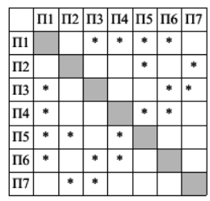
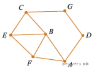

12.
На рисунке слева изображена схема дорог N-ского района. В таблице звёздочкой обозначено
наличие дороги из одного населённого пункта в другой. Отсутствие звёздочки означает, что такой
дороги нет.


Каждому населённому пункту на схеме соответствует его
номер
в
таблице,
но
неизвестно,
какой
именно
номер.
Определите, какие номера населённых пунктов в таблице могут
соответствовать населённым пунктам E и F на схеме. В ответе
запишите эти два номера в возрастающем порядке без пробелов
и знаков препинания.